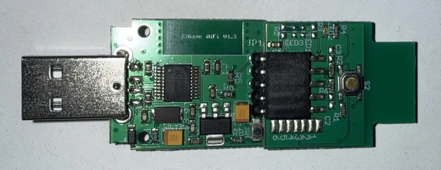

ZiGate Wi-Fi v1.3 · Zigbee2MQTT
Ta ZiGate Wi-Fi v1.3 dans Home Assistant
Flashe les firmwares ESP8266 et JN5168 par USB, configure le Wi-Fi, puis installe Zigbee2MQTT ZiGate dans Home Assistant. Pour utiliser le flasheur, ouvre cette page dans Chrome ou Edge sur ordinateur.

Installer les deux firmwares
Flash USB
Version d’essaiConnect the Wi-Fi module on its own
Wi-Fi 1.1.1
- Débranche la ZiGate, ouvre le boîtier et sépare les deux cartes.
- Appuie sur le petit bouton sous les broches.
- Branche la carte Wi-Fi en USB en gardant le bouton enfoncé.
- Relâche le bouton dès que la carte est branchée.
- Clique sur Choisir le port USB, puis sur Installer le firmware une fois le port sélectionné.

- Adaptateur USB‑TTL débranché, emboîte la radio dessus comme sur la photo.
- Appuie sur le bouton S2 de la radio.
- Branche l’adaptateur en USB en gardant S2 enfoncé.
- Relâche S2 dès que l’adaptateur est branché.
- Clique sur Choisir le port USB, puis sur Installer le firmware une fois le port sélectionné.

1b. Configure le Wi-Fi par USB
Firmware Wi-Fi 1.1.1 requis. Si l’application Zigbee2MQTT ZiGate tourne, arrête-la avant le réglage.
- Si le module Wi-Fi est déjà branché, débranche-le. Branche-le seul, sans appuyer sur le bouton.
- Saisis le Wi-Fi 2,4 GHz de ta box.
- Clique sur Enregistrer le Wi-Fi, puis choisis le port USB.
Le port COM ne s’ouvre pas
- Ferme les autres onglets de flash et les logiciels série.
- Dans le Gestionnaire de périphériques de Windows, vérifie quel port disparaît quand tu débranches l’adaptateur radio.
- Rebranche l’adaptateur. Dans les propriétés du port, relève son nom et l’éventuel code d’erreur.
Si Windows affiche PL2303HXA PHASED OUT, ouvre le guide ci-dessous pour choisir la marche à suivre selon ta version de Windows.
Facultatif · Effacer les anciens appairages
Garde la radio sur l’adaptateur USB‑TTL. Débranche l’adaptateur, puis rebranche-le sans appuyer sur S2.
La réinitialisation efface les appareils appairés et les paramètres de l’ancien réseau.
3. Remonte la ZiGate
- Débranche les deux cartes. Retire la radio de l’adaptateur USB‑TTL.
- Emboîte la radio sur le module Wi-Fi, comme sur la photo.
- Branche la ZiGate montée en USB sans appuyer sur les boutons.
- Retrouve son adresse IP dans la liste des appareils de ta box.

Configurer le Wi-Fi via le point d’accès de la ZiGate
- Branche le module Wi-Fi en USB sans appuyer sur le bouton. Si l’ancien réseau est encore accessible, coupe-le temporairement. Le point d’accès apparaît après environ 45 secondes hors connexion.
-
Lis le nom et la clé du point d’accès. Connecte ton ordinateur à ce réseau.
Choisis le port USB utilisé pour flasher le module Wi-Fi. Garde la ZiGate branchée et utilise la clé affichée pour rejoindre ZIGATE-….
- Réseau ZiGate
- Clé du réseau ZiGate
- Une fois connecté au réseau ZIGATE-…, ouvre 192.168.4.1. Saisis le nom et le mot de passe du Wi-Fi 2,4 GHz de ta box. Après le redémarrage, reconnecte ton ordinateur à ta box et retrouve l’adresse IP de la ZiGate dans ton routeur.
Si le port USB n’apparaît pas sous Windows, ouvre la page Pilotes USB pour Windows.
4. Installe l’application Zigbee2MQTT ZiGate
- Clique sur Ajouter le dépôt ZiGate, puis installe Zigbee2MQTT ZiGate dans la boutique de Home Assistant.
- Dans Configuration, saisis l’adresse IP de la ZiGate. Si tu as déjà un réseau Zigbee, choisis un autre canal. Enregistre.
- Passe au choix du broker MQTT avant de démarrer l’application.
Use the address shown after USB setup or the one listed by your router.
Home Assistant Container et configuration YAML
Avec Home Assistant Container, lance une deuxième instance Zigbee2MQTT avec son propre dossier de données. Ajoute l’adresse de ton broker MQTT et choisis un canal Zigbee différent de celui de ton premier réseau.
homeassistant:
enabled: true
mqtt:
base_topic: zigbee2mqtt_zigate
serial:
adapter: zigate
port: tcp://192.168.1.50:99995. Prépare MQTT et appaire ton premier appareil
Garde le broker de ton installation actuelle. Mosquitto dans Home Assistant est détecté automatiquement. Pour un broker externe, saisis son adresse et ses identifiants dans Zigbee2MQTT ZiGate → Configuration → Broker MQTT externe.
Si MQTT est déjà connecté à ce broker, passe à l’appairage. Sinon, configure l’intégration MQTT avec le même broker.
Sur Home Assistant OS, ouvre l’assistant MQTT et choisis l’application officielle Mosquitto broker. Home Assistant installe Mosquitto et configure la connexion.
Ouvrir l’assistant MQTTSur Home Assistant OS, installe et démarre Mosquitto broker depuis la boutique. Dans Paramètres → Appareils et services, configure l’intégration MQTT détectée et confirme la connexion à Mosquitto.
Ouvrir Mosquitto broker- Démarre Zigbee2MQTT ZiGate, puis clique sur Ouvrir l’interface Web.
- Clique sur Autoriser l’appairage, puis mets ton appareil en mode appairage.
- Retrouve l’appareil dans Paramètres → Appareils et services → MQTT.
Active Afficher dans la barre latérale dans l’application pour retrouver l’interface ZiGate.